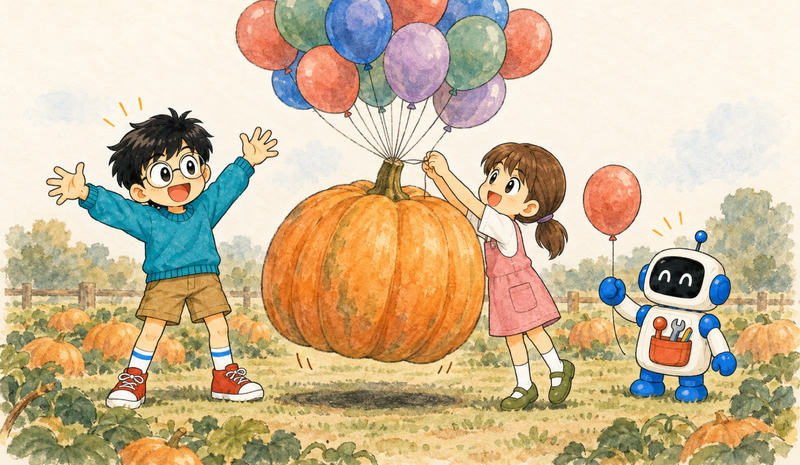

Feature 09 · ARTICLE · 2026 10
On the Nature of the Swarm
Inference scaling works, but eventually you run out of context: frontier windows top out around 1M tokens. Compaction, offloading to disk, sub-agents, and persistent agents are all ways of building more context than fits in one window. Persistent agents are parallel over context: total context capacity grows to roughly one window per agent. The price is communication. A tree routes every conversation through its root, and with 10,000 agents, peers in a mesh make more sense. I don’t yet know the right structure. My guess is that we seed it with how humans organize and let the agents change it.

Compaction
When an agent nears the end of its window, it writes a summary and hands off to a fresh context. That keeps a session going for days or weeks, but it doesn’t give you infinite context. It raises what I’ll call total context capacity (a name I made up): the biggest task a model can take on, where a task’s size is the window you’d need to do it in one go.
Every compaction is a bet. The summarizer has to decide now what will matter later. Usually it guesses well enough. In my experience, a 1M-token working context compresses quite nicely into 16k tokens. But on day one of a debugging session, a flaky run prints a weird line, and you write it off as noise. On day three, that line would have been the key, and nobody remembers it existed. A smarter summarizer doesn’t save you: on day one, dropping it was a reasonable call.
Writing to disk helps a lot. The question changes from “What do I need to remember?” to “What do I need to know exists?” But the files just sit there. The next agent has to realize they’re relevant, find them, and read them back, and reading costs context. Whatever the previous agent understood is gone and has to be rebuilt.
Sub-agents
Compaction is a degenerate multi-agent system: each compaction starts a new agent from the last one’s summary. A main agent can also spin up sub-agents. One might burn 200k tokens reading files, while the main context grows only by the task and the answer, maybe a couple thousand tokens. The answer is itself a summary, with one crucial difference: it’s written after the question is known. It can still misread the question, but compressing toward a known target is a much easier problem than compressing toward an unknown one. Even run one after the other, sub-agents would beat compaction on these tasks.
They have the opposite problem from disk: once a sub-agent answers, it’s gone, and you can’t ask it a follow-up. Disk remembers but can’t think. Sub-agents think but can’t remember.
Persistent agents
The fourth corner: don’t kill the sub-agent. A persistent sub-agent keeps its context, its files, and whatever it left running. You can ask it again tomorrow, with a different question, so compaction stops being a one-time bet.
Now several agents are alive at once. They can run in parallel, which is the obvious argument for multi-agent, and it’s true. But even if they took turns, their contexts would exist side by side. They’re parallel over context, too, and that’s what is underdiscussed: total context capacity grows to roughly one window per agent, as long as the task splits into parts that can get by on short messages. Each agent can still compact. Compaction stretches each agent along time, and more agents stretch the system sideways.
No free lunch
All these tricks build context. Reasoning builds it by thinking; agents build it by acting. That’s why I strongly disagree with calling multi-agent a “new axis of scaling”. We are still scaling inference compute, just in a more structured way.
The price is communication. Every handoff squeezes context into a message, which costs tokens and is itself lossy. If the hard part of a task needs everything in one place at once, splitting it up doesn’t help.
None of this makes me less bullish. OpenAI just had 10,000 agents solve Navier-Stokes (their claim, which mathematicians are still checking). But you can’t throw a million agents at a hard problem and expect an answer to fall out. The agents have to be good enough, and good enough to coordinate without duplicating work. A lot of the overhead can probably be trained away, but some of the communication cost is structural.
From trees to swarms
In a tree, every conversation goes through the root. The root’s context fills, it compacts, and we’re back where we started, one level up. Once siblings can talk directly, you have to ask what the root is for. So: no root, just peers in a mesh, each still free to compact and to spawn sub-agents.
Hierarchy isn’t useless. Coase asked why firms exist if markets coordinate so well. His answer: using the market isn’t free. Same for agents: start without a hierarchy, and add a bit wherever it pays for itself.
Specialization happens on its own. An agent that looked at the frontend first has context there, so the next frontend question goes to it, and every answer makes it a bit better. A random early difference solidifies into a role. In a tree, an agent in another branch can’t just ask it. The question climbs to a common ancestor and back down. Either every branch grows its own specialist, or the specialist helps only one branch. With 10 agents, a tree is probably fine. With 10,000, peers that find each other make way more sense.
Hayek’s point was that central planning fails because the knowledge needed is spread across millions of people and can’t all be sent to the center. The root agent is a central planner, and the whole context is exactly what doesn’t fit in one window.
What should the swarm look like?
I don’t yet know. A pure mesh probably isn’t it either. My guess is that we start by copying how humans organize: a shared git repo, an issue tracker, Slack, with structured access to shared state as the single source of truth. The right structure probably depends on size, too. Brooks’s law and such. But we don’t have to lock it in. We can seed the swarm with human structure and let the agents improve on it while they solve the problem. That’s how we get the bitter lesson back in.